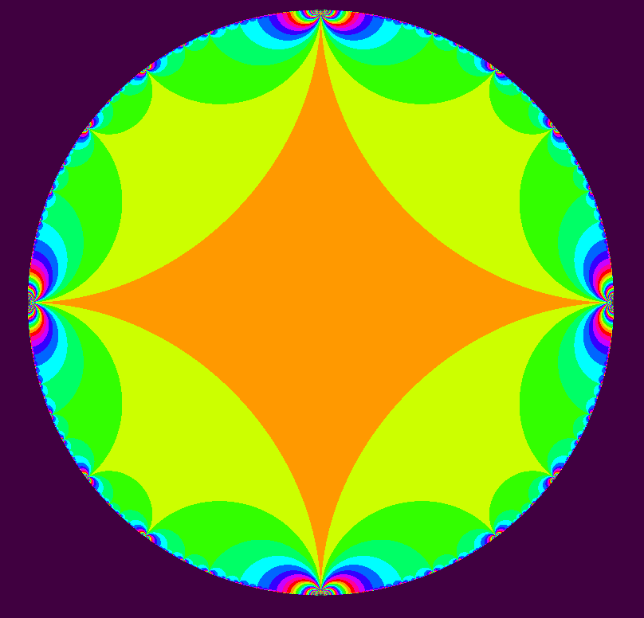
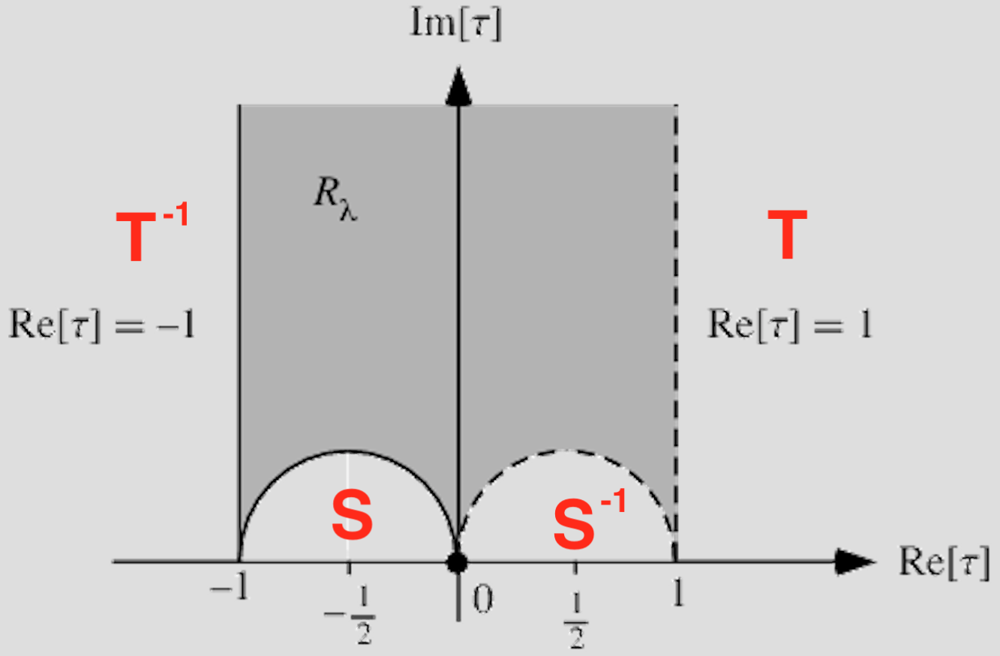
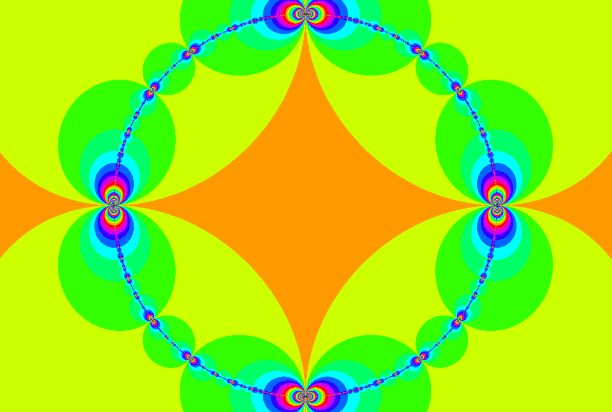

Modular Group Γ(1) generated the hyperbolic tessellations seen previously. Its generators are:


Or in matrix form: [0,1;-1,0], [1,1;1,0].
The Congruence Group Γ(2) can be generated by these matrices:
[1,2;0,1], [1,0;-2,1]
The tiling looks like this:

You can view a version I wrote in Three.js/WebGl here. You can spin it and pan and zoom. It is clear in this version that the tessellation lives on the upper-half plane of the Reimann sphere.
As before the orange region is the fundamental domain. It and all of the tiles are 4 sided and touch the rim at 4 points. Here is another representation of the fundamental domain from Wolfram Alpha[1]:

The 4 corners of this fundamental domain are -1, 0, 1, and ∞. The red letters indicate the effect of the initial tiling of 1 letter words (e.g. T, T¯¹, S, S¯¹). These areas correspond to the yellow quadrilaterals in the tiling above.
The imaginary axis cutting the fundamental domain in two is an additional axis of symmetry we could impose on the tiling. Then it would look just like the Farey graph depicted in the previous post and the disk would be tiled by ideal triangles. Ideal triangles in hyperbolic space have interesting properties (to quote wikipedia)[3]:
- All ideal triangles are congruent to each other.
- The interior angles of an ideal triangle are all zero.
- An ideal triangle has infinite perimeter.
- An ideal triangle is the largest possible triangle in hyperbolic geometry.
The Modular Necklace
If you have read the book “Indra’s Pearls” you will be familiar with a similar tiling which they describe as “The modular necklace”:
“A modular necklace is a tangent chain of four circles in which adjacent disks are paired by two transformations a and b… The transformations a, b, and ab are all parabolic and S = Fix(a), Q = Fix(b), a(P)=R, b(R) = P so that P = Fix(ba) and R = Fix(ab)… The four points P, Q, R and S always lie on a circle (or line) which is the limit set of the group. The limit circle is perpendicular to all circles in the chain. Both inner and outer tiles have their sides matched in the same way and the surfaces made by gluing up these tiles are each spheres with three punctures or cusps.”[2]
Following their naming, P, Q, R and S are the tangency points of the four circles a, A, b, and B which are positioned where the letters T, T¯¹, S, S¯¹ are in the diagram above, respectively. The möbius transform a corresponds to T and the möbius transform b corresponds to S.
If we look at the tiling this way, then it makes no sense to restrict ourself to the upper half plane and the limit set is very clear:

Another point of view on the same tiling:

[1] Weisstein, Eric W. “Modular Group Lambda.” From MathWorld–A Wolfram Web Resource. http://mathworld.wolfram.com/ModularGroupLambda.html
[2] “Indra’s Pearls: The Vision of Felix Klein”. By David Mumford, Caroline Series, David Wright. Page 214.
 Ford Circles and Farey Graphs
Ford Circles and Farey Graphs